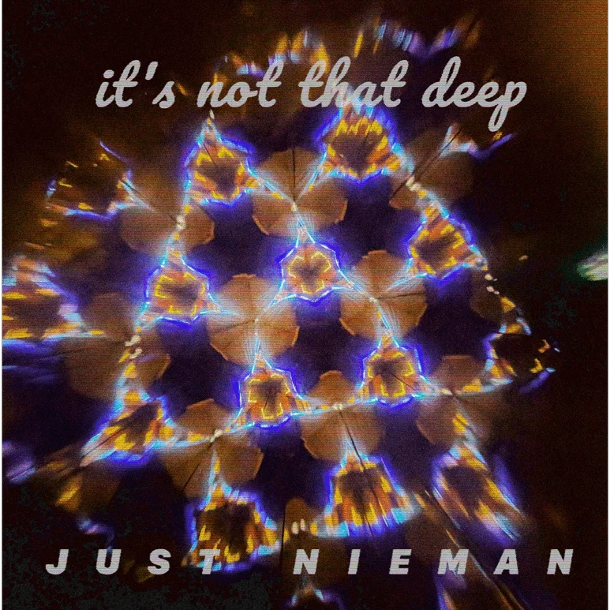
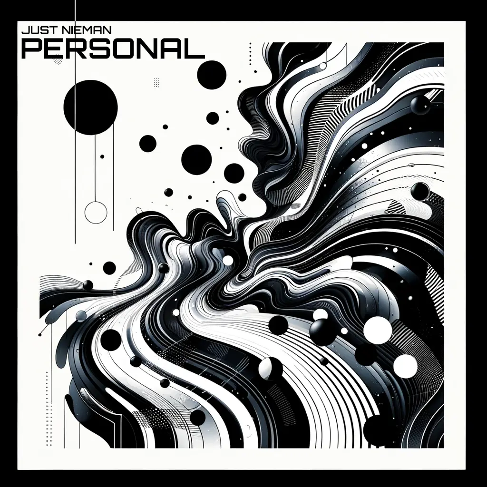

JUST NIEMAN
MUSICIAN | PRODUCER | DJ
SoundCloud
Follow me on Insta

Stream “It's Not That Deep”
Stream “My Music”

Stream “Personal”
Stream “Lives”
For business inquiries, please contact:
contact@niemans.website